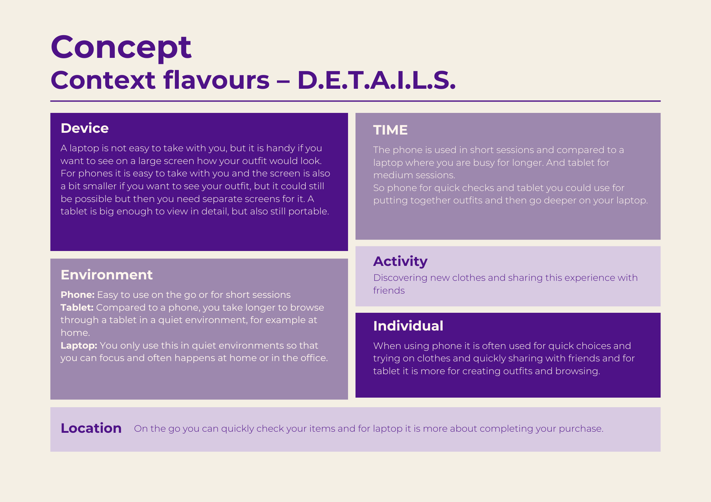

CLOSETFY
Closetfy is a clothing app where users can upload photos or create 3D scans to virtually try on garments before purchasing. The app features a reserve-in-store option, allowing customers try them on in person before making final decisions.
CONTEXT
For the project responsive multi device design I was given the assignment to come up with an interactive experience that can be experienced with multiple devices. In this specific project the idea was to focus on 1 specific experience with 1 specific outcome on a fictional platform. It was important to take the context of the user into account.
ROLES
UX/UI designer
TIMELINE
3 weeks, october 2024
User scenario
Nina needs a new outfit for a party tonight, so she doesn't have enough time to go to many stores to find the perfect outfit. Now she's afraid that she won't be able to find an outfit in time. She remembers that there is an app where you can try on clothes virtually. After uploading a photo of herself, she chooses a number of dresses. However, she is still a bit unsure about which dress looks best on her, so she wants to try them on in the store to be sure. In the app, she chooses to reserve the dresses in the store.
She quickly goes to the store and luckily can pick up her dresses at a pick-up point with the help of a QR code. She can now try on her dresses and then choose the best dress.
Afterwards, Nina shares her new dress with her friends and the code of the dress in case her friends also want to try on/pick up this dress. And is very happy that she was able to find a nice dress in time for the party.
TABLET SCREENS
home screen
The Closetfy home screen showcases curated outfit recommendations tailored to individual style preferences. There is also a button that leads users to the dressing room, encouraging users to virtually try on their selections.
detail screen
The detail screen provides information about selected items. Users will also be able to see the rating, price, available color options with visual swatches, and sizes.
PHONE SCREENS
virtual dressing room
The virtual fitting room is where users can try clothes digitally. Users can upload a photo or create a 3D scan using their phone camera to see how clothes look on them before buying.
product Screen
While in the dressing room users have the option to see quick outfit suggestions. They can also immediately see the price and add the items to their shopping cart or save them for later.
shopping cart
The shopping cart screen shows a clean list of items the user wants to buy. Each item includes a picture, name, size, and color information.
delivery
The delivery screen gives users the option to choose a delivery method. They can choose to have the items delivered to their home or to a pick-up point.
There is also a progress bar that shows users where they are in the proces of buying the items.

LAPTOP SCREENS
community feed
The Closetfy desktop interface features a dedicated social section where users can browse outfit inspiration from the community. There is also a button to try it on in the virtual fitting room
content creation
The post creation interface is for users to share their fashion choices. Users can upload outfit photos andtag specific clothing items.